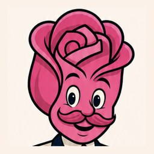
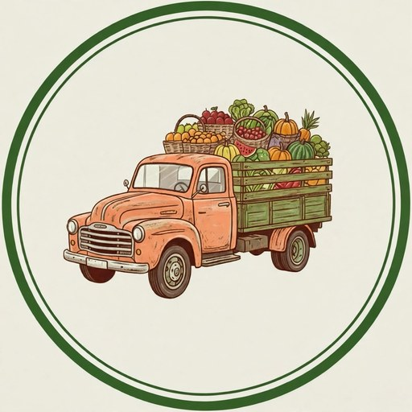

SUÉLTALO · Sistemas que se publican solos
Este blog se publica solo. Y no es el único.
Esto no es una presentación: son sistemas de contenido publicando solos ahorita — el de esta casa y los de dos negocios reales. Redes, blog y newsletter saliendo a diario sin que su dueño los empuje. Se monta en una semana, con tus propias cuentas, y todo canaliza a donde tú cierras. Míralos trabajar; si quieres el tuyo, la puerta es un mensaje directo.
Míralos trabajar
Tres sistemas corriendo en vivo, cada uno con su identidad y su voz — y un espacio libre. Entra a cualquiera y míralo publicar: si está publicando, está corriendo.
Este blog
Este blog: una pieza diaria verificada, con su newsletter, su podcast y sus versiones en redes. Es el primer Suéltalo y corre solo desde el primer día. La prueba no es esta página: es todo lo demás que se publica aquí a diario.

Cliente 0 · Corriendo desde el 20 de noviembre de 2026Don Rosendo
El medio de eventos y hospedaje de Grupo Santa Rosa: publica tips, datos y contenido del sector en su blog y sus redes, y le lleva clientes al grupo. Quedó montado en menos de una semana y desde entonces corre solo, a diario.

Negocio de producto · Corriendo desde el 16 de noviembre de 2026LOS MANDA2
Frutas y verduras para eventos: su contenido se publica solo a diario y vende por mensaje directo. Cada entrega sale con su nota y su video, generados por el sistema.
El tuyo
Este espacio está libre: tu empresa o tu proyecto personal, publicando solo en una semana, con tus propias cuentas — y todo canalizando a donde tú cierras.
¿Lo tuyo no es publicar, sino operar?
No todo es publicar: hay empresas y personas que necesitan un sistema que ordene su operación o su día a día. Esa es la otra puerta.
PRISMA OPS
Sistemas personalizados que ordenan la operación de una empresa o el día a día de una persona. Y si ya publicas con tu Suéltalo, ese contenido puede vivir dentro de tu sistema.
Qué recibes con tu Suéltalo
No recibe un curso ni una asesoría: recibe su contenido corriendo.
- Tus redes publicando solas, con tu identidad y tu voz — nada de plantillas genéricas que se notan a leguas.
- Tu blog vivo, con piezas que tu cliente sí puede usar, no relleno para «estar presente».
- Tu newsletter saliendo solo, sin que tengas que sentarte a armarlo cada semana.
- Todo canalizando a donde cierras: a tu WhatsApp o a tus mensajes, según tu negocio. El contenido trabaja; tú atiendes a los que llegan.
Clientes que te encuentran solos
Tu negocio publicando a diario sin que tú ni tu equipo tengan que hacerlo: que te encuentren, que te crean y que te escriban. Como le pasa hoy a Grupo Santa Rosa con Don Rosendo.
Tu proyecto personal, corriendo solo
Tu proyecto personal deja de depender de tus ratos libres: publica a diario, tu audiencia crece y tu medio se ve tan constante como el de una empresa — porque corre con el mismo sistema.
Diagnóstico · 1 minuto
¿No sabes qué pieza te falta?
Siete preguntas sobre tu empresa o tu proyecto personal — sin pedirte datos y sin precios — y al final sabes exactamente qué necesitas: una pieza, un paquete o el sistema completo.
Nada de esto es una maqueta: son sistemas corriendo. El tuyo puede ser el siguiente.
Cada Suéltalo queda asentado aquí con su fecha y sus enlaces vivos. Verificarlo es así de simple: si el enlace abre y está publicando, está corriendo.
Cargando el registro…
SUÉLTALO
¿Quieres uno corriendo para ti?
Sin discurso de ventas y sin compromiso: cuéntame por mensaje directo qué quieres que corra solo — tu empresa o tu proyecto personal — y vemos si encaja.
¿Ya nos escribiste por DM? El siguiente paso es tu formulario de arranque: un minuto, en una sola pasada — tu material, tus canales, tus fuentes — y con eso armamos tu propuesta.